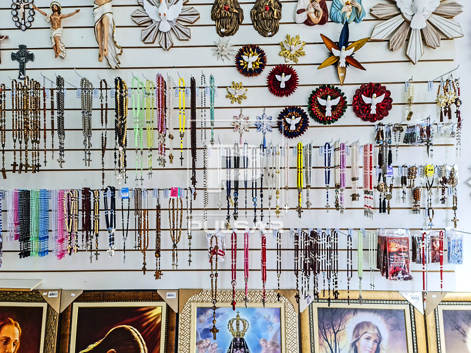

Nossos Serviços:


Batizado
Saiba como agendar o batizado de seu filho e quais os requisitos necessários.
Agendar Batizado

Lojinha do Frei
Venha conhecer nossa loja com artigos religioso para que você ajude a manter a obra - Paróquia de São Lucas.
Lanchonete do Frei
Venha conhecer nossa à Lanchonete do Frei e você também estará ajudando a manter a obra - Paróquia de São Lucas.